โครงการสัมมนาวิชาการระดับชาติด้านคนพิการ ครั้งที่ 19 ประจำปี 2570
The 19th National Conference on Persons with Disabilities
ความเป็นมาของการจัดงาน
โครงการสัมมนาวิชาการระดับชาติด้านคนพิการ ครั้งที่ 19 ประจำปี 2570 (The 19th National Conference on Persons with Disabilities: NCPD 2027) จัดขึ้นภายใต้แนวคิด "From Learning to Earning: Innovation for Persons with Disabilities in an Inclusive Society" หรือ "การเรียนรู้ สู่การสร้างรายได้ด้วยนวัตกรรมเพื่อคนพิการ ในสังคมที่ทุกคนสามารถเข้าถึง มีส่วนร่วม และเท่าเทียม" โดยมีที่มาจากการขับเคลื่อนนโยบายการพัฒนาคุณภาพชีวิตคนพิการของประเทศ ตามยุทธศาสตร์ชาติ 20 ปี และนโยบายของกระทรวงการพัฒนาสังคมและความมั่นคงของมนุษย์ ที่มุ่งส่งเสริมโอกาสทางการศึกษา การมีงานทำ การสร้างรายได้ และการพึ่งพาตนเองอย่างยั่งยืนของคนพิการ ผ่านการบูรณาการความร่วมมือจากทุกภาคส่วน ทั้งภาครัฐ ภาคเอกชน สถาบันการศึกษา และภาคประชาสังคม
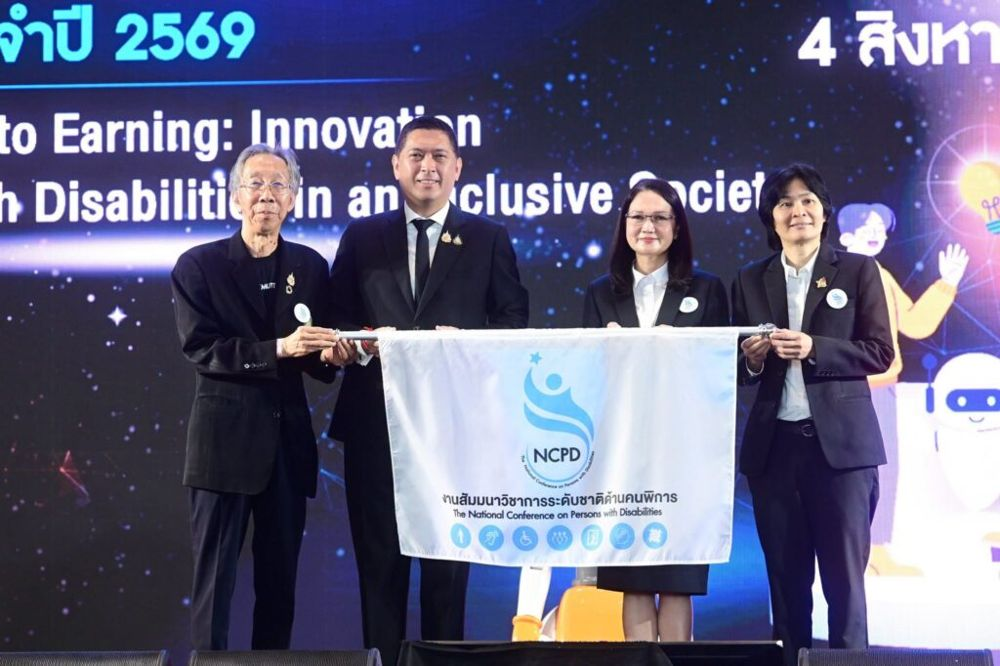
มหาวิทยาลัยขอนแก่น ในฐานะสถาบันอุดมศึกษาหลักของภาคตะวันออกเฉียงเหนือ ได้ตระหนักถึงโจทย์ท้าทายนี้ จึงได้ขับเคลื่อนแนวคิดดังกล่าวผ่าน ยุทธศาสตร์ที่ 10 การบริการวิชาการเพื่อสร้างประโยชน์ให้สังคม (Societal Contribution) โดยเน้นการสนับสนุนและเสริมสร้างความเข้มแข็งให้กับชุมชน (Community Support) ผ่านการบูรณาการองค์ความรู้ เทคโนโลยี และนวัตกรรมอันเป็นอัตลักษณ์ของมหาวิทยาลัย เพื่อยกระดับคุณภาพชีวิตและดูแลสุขภาพของกลุ่มเปราะบาง ซึ่งสอดคล้องกับเป้าหมายการพัฒนาที่ยั่งยืน (Sustainable Development Goals: SDGs) ขององค์การสหประชาชาติ โดยปัจจุบันมหาวิทยาลัยขอนแก่นมีทั้งกลุ่มวิจัยเฉพาะทาง คณะวิชา และโครงการบริการวิชาการที่หลากหลาย ที่ประสบความสำเร็จในการสร้างอาชีพ พัฒนาคุณภาพชีวิต และคืนศักดิ์ศรีความเป็นมนุษย์ให้แก่คนพิการ อย่างเป็นรูปธรรมในหลากหลายชุมชน
ด้วยฐานรากทางวิชาการที่เข้มแข็ง นวัตกรรมพร้อมใช้ที่ตอบโจทย์บริบทสังคม และเครือข่ายความร่วมมือที่เหนียวแน่นนี้ มหาวิทยาลัยขอนแก่นจึงทำหน้าที่เป็น "เจ้าภาพร่วม" ในการจัดสัมมนาวิชาการระดับชาติด้านคนพิการ ประจำปี 2570 เพื่อเป็นเวทีกลางระดับประเทศในการแลกเปลี่ยนเรียนรู้ ขยายผลองค์ความรู้จากงานวิจัยสู่การปฏิบัติ และร่วมกำหนดทิศทางนโยบายสาธารณะในการพัฒนาคุณภาพชีวิตคนพิการอย่างยั่งยืนสืบไป
Latest News
ข่าวสารล่าสุด
ภาคีเครือข่าย
การสัมมนาวิชาการระดับชาติด้านคนพิการ ครั้งที่ 19 ประจำปี 2570
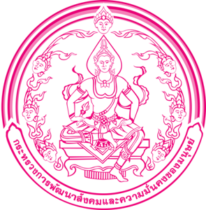
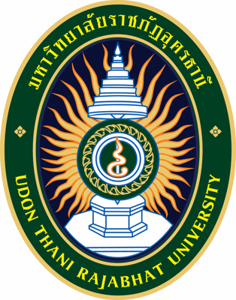
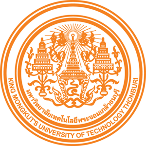
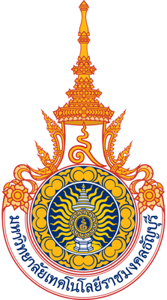
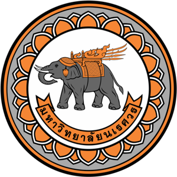
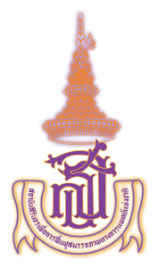
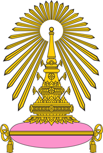
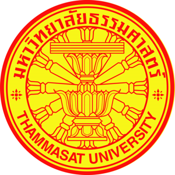
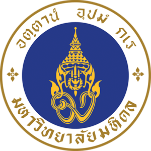
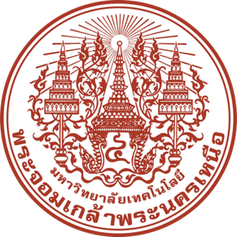
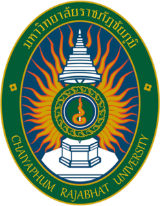
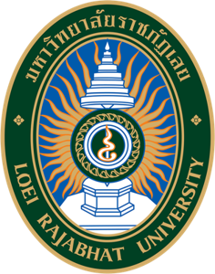
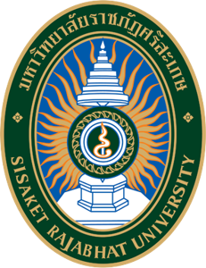
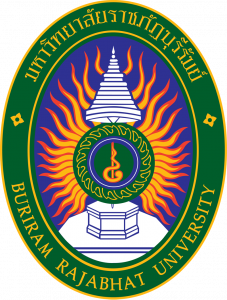
Contact
สอบถามรายละเอียดเพิ่มเติม
ฝ่ายประสานงานโครงการ
ทีมงานพร้อมตอบทุกคำถามเกี่ยวกับการส่งบทความ การลงทะเบียน และการเข้าร่วม
- หน่วยงาน
- ศูนย์........................................ (รอข้อมูล)
- อีเมล
- ncpd2027@gmail.com
- โทรศัพท์
- 0-xxxx-xxxx (รอข้อมูล)
- เวลาทำการ
- จันทร์ – ศุกร์ เวลา 08:30 – 16:30 น.